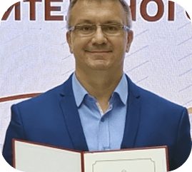

МИНИСТЕРСТВО ОБРАЗОВАНИЯ РОССИЙСКОЙ ФЕДЕРАЦИИ
Управление образования администрации Сергиево-Посадского городского округа
Муниципальное бюджетное учреждение дополнительного образования
ЦЕНТР ДЕТСКОГО (ЮНОШЕСКОГО) ТЕХНИЧЕСКОГО ТВОРЧЕСТВА
МИНИСТЕРСТВО ОБРАЗОВАНИЯ РОССИЙСКОЙ ФЕДЕРАЦИИ
Управление образования администрации Сергиево-Посадского городского округа
Муниципальное бюджетное учреждение дополнительного образования
ЦЕНТР ДЕТСКОГО (ЮНОШЕСКОГО) ТЕХНИЧЕСКОГО ТВОРЧЕСТВА

Директор
Заслуженный мастер спорта России, Почетный работник общего образования РФ, Президент федерации ракетомодельного спорта России
За время работы награжден:
- победитель областного конкурса на присуждение премии Губернатора Московской области "Лучший по профессии" в сфере образования в номинации: Лучший руководитель организации дополнительного образования в номинации «Лучшая практика внедрения инноваций в дополнительном образовании» - 2023г.
- благодарность министра образования Московской области за отличные достижения в 2022-2023 учебном году.
- медаль Министерства науки и высшего образования Российской Федерации "За вклад в реализацию государственной политики в области образования" - 2021г.
- благодарность министра образования Д.В.Ливанова – 2014 г.
- почетная грамота Министерства образования и науки Российской Федерации – 2010 г.
- благодарность депутата государственной Думы С.А. Пахомова - "За высокие показатели оценки эффективности деятельности образовательных учреждений Московской области" - 2021 г.
- почетная грамота Министерства образования Московской области - 2008 г.
- благодарность ГБОУ ДО МО "Областной Центр развития дополнительного образования и патриотического воспитания детей и молодежи" - 2020г.
- грамота ГБОУ ДО МО "Областной Центр развития дополнительного образования и патриотического воспитания детей и молодежи" - 2019г.
- орден ДОСААФ России «За заслуги 3 степени» - 2016 г..
- почетный знак Министерства спорта и культуры МО «Спортивная доблесть 3 степени» - 2013 г.
- Почетная грамота Главы Сергиево – Посадского муниципального района Московской области 2012 г.
- Грамота ГБОУ ДОД МО «Центр развития творчества детей и юношества» - 2012 г. и 2016 г.
- медаль трижды Героя Советского Союза А.И. Покрышкина - 2008 г.
- именная премия Главы Сергиево Посадского района - 2006г.
- благодарность Московского областного Совета ДОСААФ – 2009 г..
- Лауреат премии губернатора Московской области Б.В.Громова - 2007г..
Конт. тел.:+7 (496) 540-49-38
e-mail:sepo_mbudo_unost@mosreg.ru

Заместитель директора по УВР
Мастер спорта России
Педагогическая категория - высшая
Образование - высшее МФЮА
Педагогический стаж - 20 лет
Профессиональная переподготовка - СОЮЗ НП ВО «Институт международных социально-гуманитарных связей», 2016 г.
Педагог дополнительного образования объединение - аэрокосмическое моделирование.
Конт. тел.:+7 (916) 300-44-20
e-mail:sepo_mbudo_unost@mosreg.ru

Заместитель директора по безопасности
Педагогическая категория - высшая
Образование - высшее МГИУ
Педагогический стаж - 11 лет
Профессиональная переподготовка - СОЮЗ НП ВО «Институт международных социально-гуманитарных связей», 2016 г.
Педагог дополнительного образования объединение - ракетомоделирования
Конт. тел.:+7 (496) 540-49-38
e-mail:sepo_mbudo_unost@mosreg.ru

Заместитель директора
Педагогическая категория - высшая
Образование - высшее. Московский университет им. С. Ю. Витте.
Педагогический стаж - 6 лет
Педагог дополнительного образования объединение - беспилотные летательные аппараты (радиоуправляемые модели).
Конт. тел.:+7 (496) 551-16-15
e-mail:sepo_mbudo_unost@mosreg.ru

Заместитель директора по административно-хозяйственной деятельности
Образование - среднее-специальное
Стаж работы - 27 лет
Конт. тел.:+7 (496) 551-16-15
e-mail:sepo_mbudo_unost@mosreg.ru

Педагог дополнительного образования
Педагогическая категория - первая
Образование - высшее. ХПИ им. Крупской
Педагогический стаж - 29 лет
Педагогический стаж - 20 лет
Профессиональная переподготовка - СОЮЗ НП ВО «Институт международных социально-гуманитарных связей», 2016 г.
Руководитель структурного подразделения
Объединение - Город мастеров
Конт. тел.:+7 (496) 546-35-25
e-mail:sepo_mbudo_unost@mosreg.ru

Заведующая отделом
Педагогическая категория - высшая
Образование - высшее
Стаж работы- 35 лет.
Профессиональная переподготовка - СОЮЗ НП ВО «Институт международных социально-гуманитарных связей», 2016 г.
Объединение - творческое моделирование
Наш адрес:
Сергиев Посад, пр-д Новозагорский, д. 3А
(Клементьевский пос., ЦДТТ "Юность")
Позвоните нам:
+7 (496) 540-49-38
+7 (916) 300-44-20
+7 (496) 549-04-91 - вахта
Напишите нам:
sepo_mbudo_unost@mosreg.ru